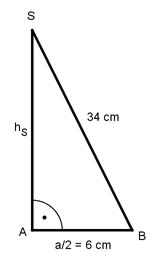

Aufgabe 239 Für Dekorationssterne werden Pyramiden auf jede Seitenfläche eines Würfels aufgesetzt. Der Würfel hat Seiten von 12 cm, die Pyramiden haben Seitenkanten von jeweils 34 cm. Wie viel Silberfolie braucht man zur Verkleidung?  Satz von Pythagoras im Dreieck ABC: BC² = AB² + AC² 34² cm² = hS² + 6² cm² | -6² cm² hS² = 34² cm² - 6² cm² hS² = 1 120 cm² |√ hS = 33,5 cm M = 24 * Seitenflächen der Pyramiden 12 cm * 33,5 cm M = 24 * ------------------- = 4 824 cm² 2